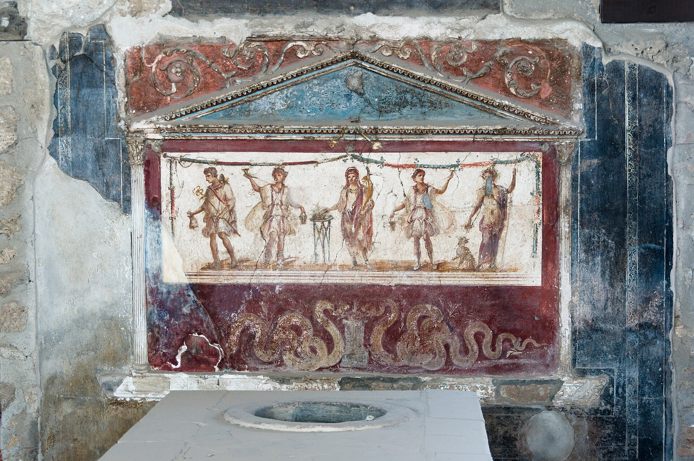
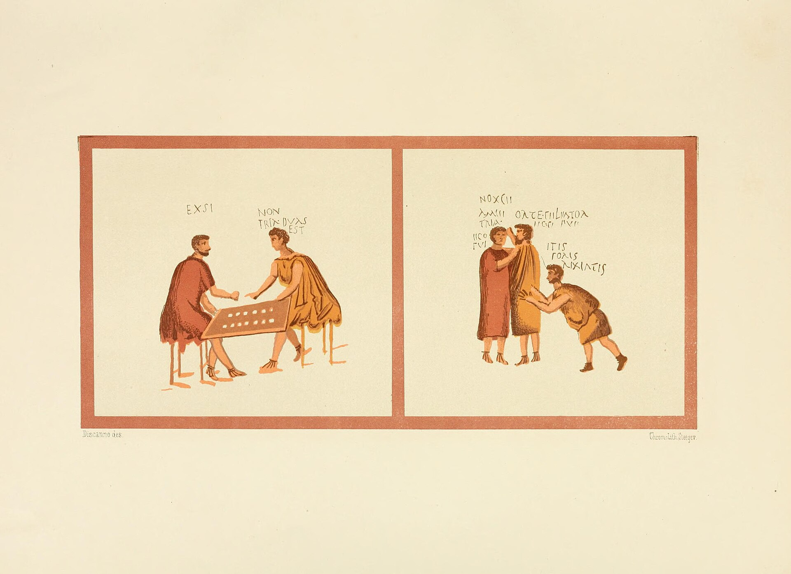
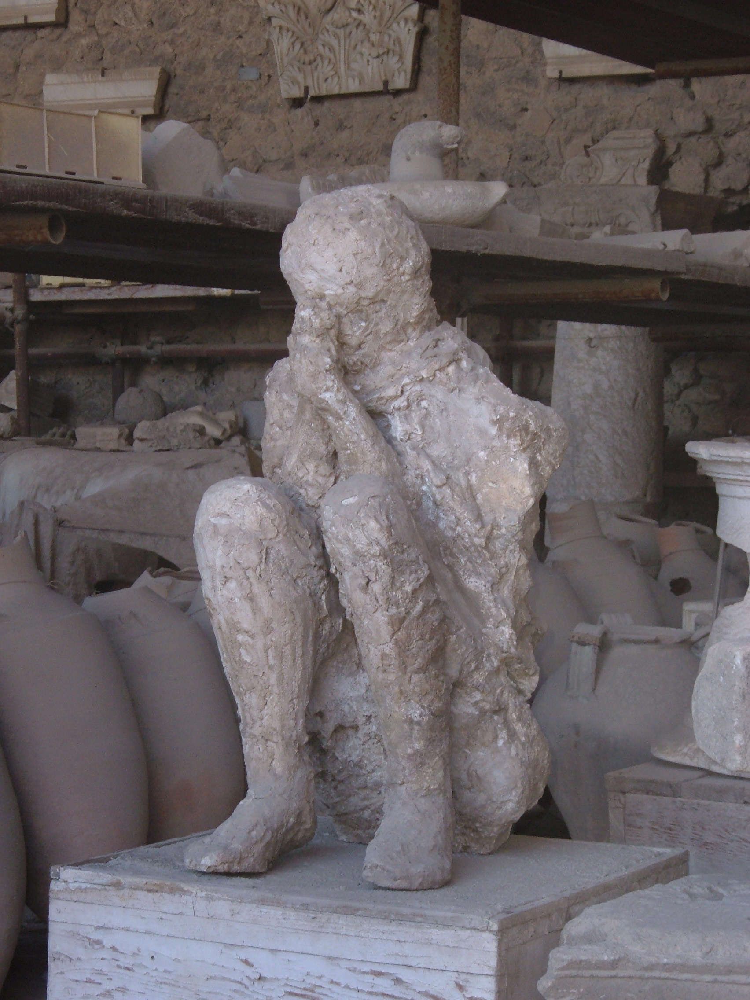

Successus
Freedman and Tavern Keeper · Pompeii

You were born into slavery in Capua, the son of two domestic slaves owned by a wealthy Campanian family. You were trained as a cook, a skilled position that gave you value. At twenty-six, your owner manumitted you — possibly in his will, possibly as a reward for long service. You took his praenomen and nomen as was customary for freedmen, becoming Numerius Popidius Successus, though everyone called you by your cognomen. You owed your former master continued obligations (operae — days of free labor per year) and informal deference.
Pompeii. You moved to Pompeii around 60 AD and used savings and a small loan from your former patron to open a thermopolium — a food-and-drink counter on the Via dell'Abbondanza, one of the city's main commercial streets. Thermopolia were the fast food of the Roman world: counters with embedded terracotta jars (dolia) holding hot stews, lentils, wine, and sauces. You served sailors from the harbor at the mouth of the Sarno, craftsmen from the nearby fulleries and dye-works, and travelers. You hired two slave assistants and employed a freeborn serving girl.
Personal life and social world. You married a freedwoman named Fortunata (a common freedwoman name, also famously used by Petronius in the Satyricon — which was being written roughly during your lifetime). You had two children; both survived childhood. Your social world was defined by your status: freedmen were legally free but socially stigmatized. You could not hold political office, but your sons, born free, could. You joined the Augustales — a semi-religious college of freedmen who funded public games and building projects in exchange for social recognition. It was the highest public role a freedman could hold.
The earthquake of 62 AD. A massive earthquake struck Pompeii in February 62 AD, causing severe damage. Your thermopolium's rear wall cracked; the building next door partially collapsed. Seventeen years later, at the time of the eruption, the city was still rebuilding — scaffolding, unfinished repairs, and half-painted frescoes are preserved in the archaeological record. You repaired your shop at your own expense and added a small dining room in the back. Business improved during the reconstruction years; the city was full of construction workers.
Graffiti. Pompeii's walls are covered in graffiti — over 11,000 inscriptions have been found. Someone scratched on the wall near your thermopolium: "Successus the weaver loves Iris, the slave of the barmaid. She doesn't care about him. But he begs her to feel sorry for him. Written by his rival. Goodbye." Whether this is you or a different Successus is unknown, but the intimate, petty, human texture of Pompeian graffiti gives us the emotional register of people exactly like you: jealousies, debts, election endorsements, bad poetry, and obscenities.
August 24, 79 AD. Vesuvius had been rumbling for days; minor earthquakes shook the city, and springs dried up. Around midday on August 24 (or possibly October 24 — recent archaeological evidence disputes the traditional date), the eruption began. A column of ash and pumice rose roughly twenty miles into the sky. For the first six hours, pumice rained on the city at a rate of roughly six inches per hour. Many people fled during this phase. You did not — perhaps you were protecting the shop, perhaps you believed it would stop, perhaps you were waiting for family.
Around midnight, the eruption column collapsed, sending the first of several pyroclastic surges — superheated gas and ash, moving at over 100 miles per hour at temperatures around 300°C — racing down the mountain's slopes. The first surge stopped just short of the city walls. The second, around 6:30 AM on August 25, reached Pompeii. Death was instantaneous: thermal shock. Your body was found (or one like it) in a thermopolium, curled in a corner.


What shaped this life
Manumission and the freedman's social limbo, the Campanian commercial economy, the vibrant low-culture of a small Roman city, and the geological catastrophe that simultaneously ended and preserved this world.
Every image above is a real museum artifact or photograph; full attribution on the credits page.